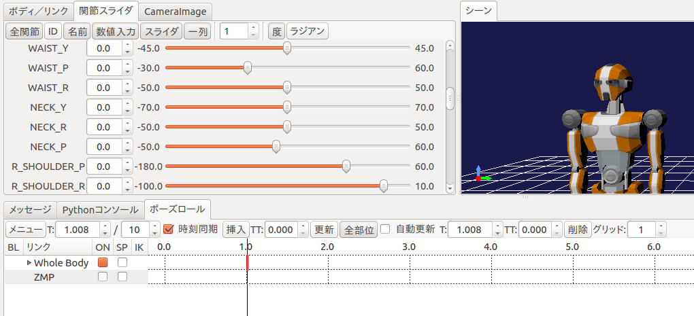
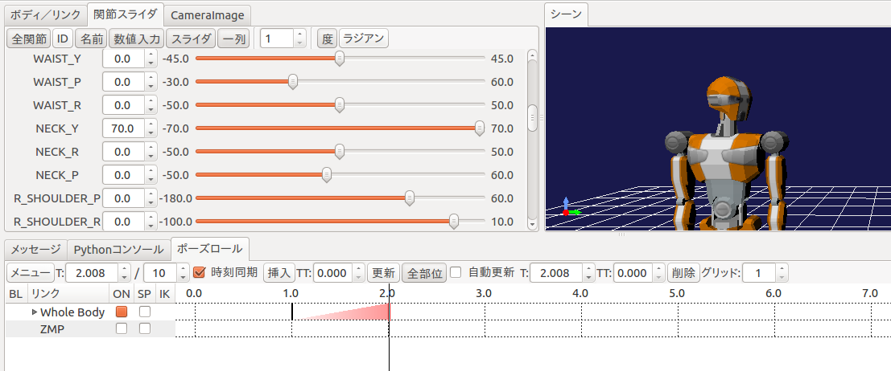
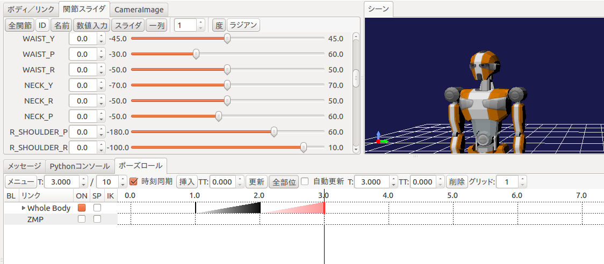
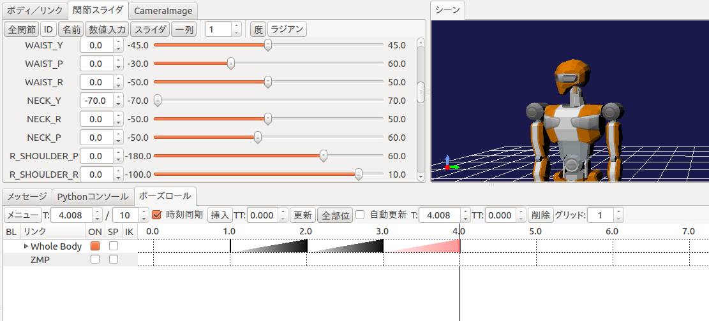
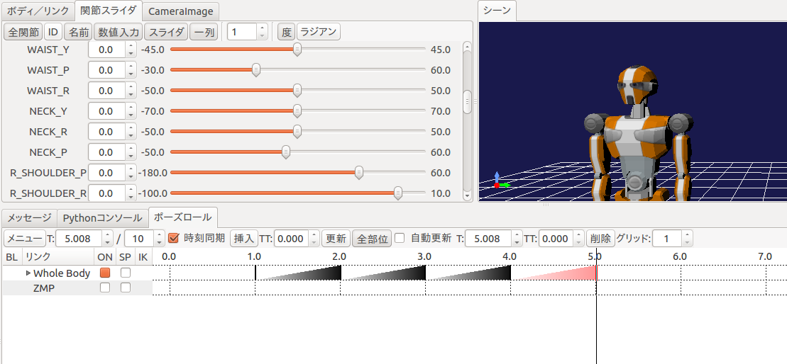
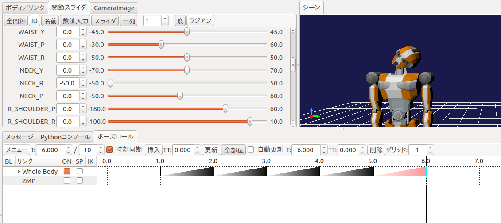
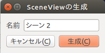
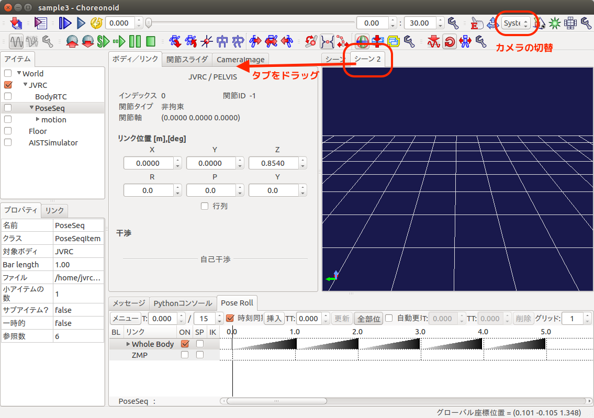
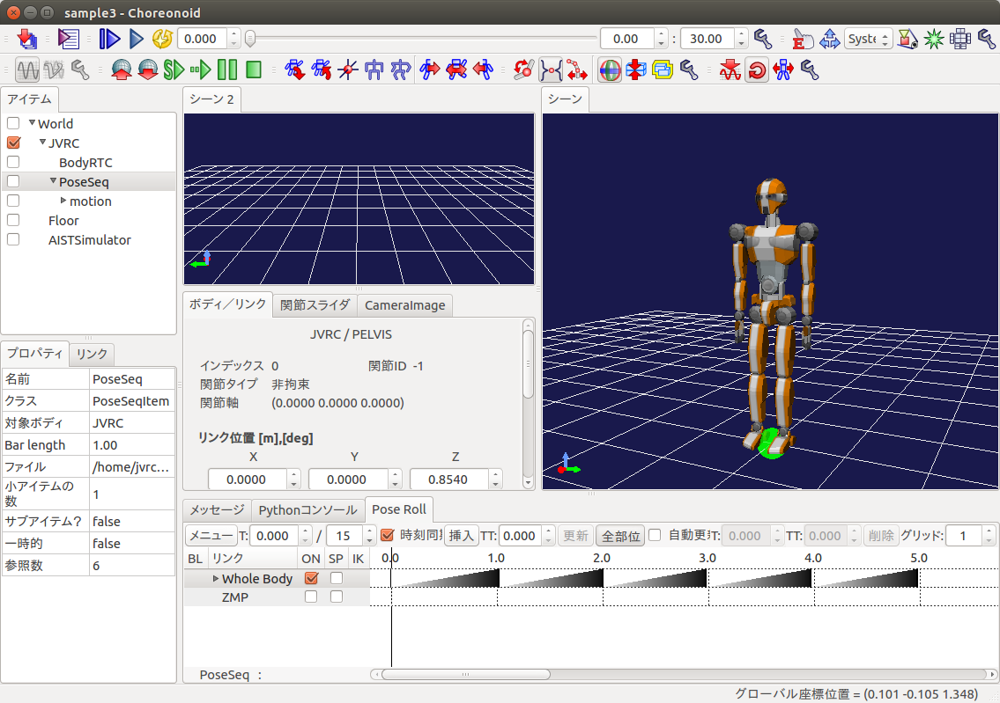

Joint control using a RT component¶
This section extentds the RT component developed in the previous section to keep the robot standing position.
RTコンポーネントの拡張¶
関節のPD制御を行うために、前の節で作成したRTコンポーネントRobotControllerRTCを拡張します。PD制御を行うためには、関節へのトルク指令を出力する必要があるため、トルク指令用のデータポートをRTCBuilderを用いて追加します。[RobotControllerRTC]の[データポート]タブから、追加([Add])するデータポートのプロファイルは次のようになります。
OutPort プロファイル:
ポート名: u データ型: RTC::TimeDoubleSeq 変数名: torque 表示位置: RIGHT
データポートを追加し、[基本]タブから再度コード生成([コード生成]と[Generate])を行ったら、ビルド(buildディレクトリにてmake)ができることを確認しておきます。
Source code of a controller¶
A header file of the controller is as follows.
1 2 3 4 5 6 7 8 9 10 11 12 13 14 15 16 17 18 19 20 21 22 23 24 25 26 27 28 29 30 31 32 33 34 35 36 37 38 39 40 41 42 43 44 45 46 47 48 49 50 51 52 53 54 55 56 57 | /*!
* @file RobotControllerRTC.h
* @brief Robot Controller component
* @date $Date$
*
* $Id$
*/
#ifndef ROBOTCONTROLLERRTC_H
#define ROBOTCONTROLLERRTC_H
#include <rtm/idl/BasicDataTypeSkel.h>
#include <rtm/idl/ExtendedDataTypesSkel.h>
#include <rtm/idl/InterfaceDataTypesSkel.h>
#include <cnoid/MultiValueSeq>
#include <vector>
using namespace RTC;
#include <rtm/Manager.h>
#include <rtm/DataFlowComponentBase.h>
#include <rtm/CorbaPort.h>
#include <rtm/DataInPort.h>
#include <rtm/DataOutPort.h>
class RobotControllerRTC
: public RTC::DataFlowComponentBase
{
public:
RobotControllerRTC(RTC::Manager* manager);
~RobotControllerRTC();
virtual RTC::ReturnCode_t onInitialize();
virtual RTC::ReturnCode_t onActivated(RTC::UniqueId ec_id);
virtual RTC::ReturnCode_t onDeactivated(RTC::UniqueId ec_id);
virtual RTC::ReturnCode_t onExecute(RTC::UniqueId ec_id);
protected:
RTC::TimedDoubleSeq m_angle;
InPort<RTC::TimedDoubleSeq> m_angleIn;
RTC::TimedCharSeq m_torque;
OutPort<RTC::TimedCharSeq> m_torqueOut;
private:
cnoid::MultiValueSeqPtr qseq;
std::vector<double> q0;
cnoid::MultiValueSeq::Frame oldFrame;
int currentFrame;
double timeStep_;
};
extern "C"
{
DLL_EXPORT void RobotControllerRTCInit(RTC::Manager* manager);
};
#endif // ROBOTCONTROLLERRTC_H
|
An output data port is added to output joint torques. RTC::OutPort<RTC::TimedDoubleSeq> is the definition of the output port.
Source codes of the controller are as follows. This file was created by modifying SR1WalkConrollerRTC.cpp which is included in Choreonoid.
1 2 3 4 5 6 7 8 9 10 11 12 13 14 15 16 17 18 19 20 21 22 23 24 25 26 27 28 29 30 31 32 33 34 35 36 37 38 39 40 41 42 43 44 45 46 47 48 49 50 51 52 53 54 55 56 57 58 59 60 61 62 63 64 65 66 67 68 69 70 71 72 73 74 75 76 77 78 79 80 81 82 83 84 85 86 87 88 89 90 91 92 93 94 95 96 97 98 99 100 101 102 103 104 105 106 107 108 109 110 111 112 113 114 115 116 117 118 119 120 121 122 123 124 125 126 127 128 129 130 131 132 133 134 135 136 137 138 139 140 141 142 143 144 145 146 147 148 149 150 151 152 153 154 155 156 157 158 159 160 161 162 163 164 | /*!
* @file RobotControllerRTC.cpp
* @brief Robot Controller component
* @date $Date$
*
* $Id$
*/
#include "RobotControllerRTC.h"
#include <iostream>
#include <cnoid/BodyMotion>
#include <cnoid/ExecutablePath>
#include <cnoid/FileUtil>
using namespace std;
using namespace cnoid;
namespace {
static const double pgain[] = {
50000.0, 30000.0, 30000.0, 30000.0, 30000.0,
80000.0, 80000.0, 10000.0, 3000.0, 30000.0,
30000.0, 80000.0, 3000.0, 30000.0, 10000.0,
3000.0, 3000.0, 30000.0, 30000.0, 10000.0,
3000.0, 30000.0, 3000.0, 3000.0, 3000.0,
3000.0, 3000.0, 3000.0, 3000.0, 3000.0,
3000.0, 3000.0, 10000.0, 3000.0, 3000.0,
30000.0, 3000.0, 3000.0, 3000.0, 3000.0,
3000.0, 3000.0, 3000.0, 3000.0,
};
static const double dgain[] = {
100.0, 100.0, 100.0, 100.0, 100.0,
100.0, 100.0, 100.0, 100.0, 100.0,
100.0, 100.0, 100.0, 100.0, 100.0,
100.0, 100.0, 100.0, 100.0, 100.0,
100.0, 100.0, 100.0, 100.0, 100.0,
100.0, 100.0, 100.0, 100.0, 100.0,
100.0, 100.0, 100.0, 100.0, 100.0,
100.0, 100.0, 100.0, 100.0, 100.0,
100.0, 100.0, 100.0, 100.0,
};
};
// Module specification
static const char* robotcontrollerrtc_spec[] =
{
"implementation_id", "RobotControllerRTC",
"type_name", "RobotControllerRTC",
"description", "Robot Controller component",
"version", "1.0.0",
"vendor", "AIST",
"category", "Generic",
"activity_type", "PERIODIC",
"kind", "DataFlowComponent",
"max_instance", "1",
"language", "C++",
"lang_type", "compile",
""
};
RobotControllerRTC::RobotControllerRTC(RTC::Manager* manager)
: RTC::DataFlowComponentBase(manager),
m_angleIn("q", m_angle),
m_torqueOut("u", m_torque)
{
}
RobotControllerRTC::~RobotControllerRTC()
{
}
RTC::ReturnCode_t RobotControllerRTC::onInitialize()
{
addInPort("q", m_angleIn);
addOutPort("u", m_torqueOut);
return RTC::RTC_OK;
}
RTC::ReturnCode_t RobotControllerRTC::onActivated(RTC::UniqueId ec_id)
{
if(!qseq){
string filename = getNativePathString(
boost::filesystem::path(shareDirectory())
/ "motion" / "RobotPattern.yaml");
BodyMotion motion;
if(!motion.loadStandardYAMLformat(filename)){
cout << motion.seqMessage() << endl;
return RTC::RTC_ERROR;
}
qseq = motion.jointPosSeq();
if(qseq->numFrames() == 0){
cout << "Empty motion data." << endl;
return RTC::RTC_ERROR;
}
q0.resize(qseq->numParts());
timeStep_ = qseq->getTimeStep();
}
m_torque.data.length(qseq->numParts());
if(m_angleIn.isNew()){
m_angleIn.read();
}
for(int i=0; i < qseq->numParts(); ++i){
q0[i] = m_angle.data[i];
}
oldFrame = qseq->frame(0);
currentFrame = 0;
return RTC::RTC_OK;
}
RTC::ReturnCode_t RobotControllerRTC::onDeactivated(RTC::UniqueId ec_id)
{
return RTC::RTC_OK;
}
RTC::ReturnCode_t RobotControllerRTC::onExecute(RTC::UniqueId ec_id)
{
if(m_angleIn.isNew()){
m_angleIn.read();
}
MultiValueSeq::Frame frame;
if(currentFrame > qseq->numFrames()){
frame = oldFrame;
}else{
frame = qseq->frame(currentFrame++);
}
for(int i=0; i < frame.size(); i++){
double q_ref = frame[i];
double q = m_angle.data[i];
double dq_ref = (q_ref - oldFrame[i]) / timeStep_;
double dq = (q - q0[i]) / timeStep_;
m_torque.data[i] = (q_ref - q) * pgain[i]/100.0 + (dq_ref - dq) * dgain[i]/100.0;
q0[i] = q;
}
oldFrame = frame;
m_torqueOut.write();
return RTC::RTC_OK;
}
extern "C"
{
DLL_EXPORT void RobotControllerRTCInit(RTC::Manager* manager)
{
coil::Properties profile(robotcontrollerrtc_spec);
manager->registerFactory(profile,
RTC::Create<RobotControllerRTC>,
RTC::Delete<RobotControllerRTC>);
}
};
|
The procedure to add an output port is similar to adding an input port.
Let’s look at implementation of onActivated(). This function is called only once when a RT component is activated. This function reads RobotPattern.yaml in shared data directory of Choreonoid. This file contains joint angle trajectories and it can be loaded by calling motion.loadStandardYAMLformat(). onActivated() initializes other variables.
Computation of joint torques is added to onExecute(). After reading joint angles, joint torques are computed and stored to m_torque.data[i]. In this tutorial, joint torques are computed by simple PD control. Position gains and derivative gains are defined at the top of the source code. If we can’t control joints property, we need to adjust those values. Values stored in m_torque.data” are output by calling m_torqueOut.write().
CMakeLists.txtの編集¶
このコントローラはChoreonoidのライブラリが提供している機能を使用しているため、Choreonoidのライブラリをリンクする必要があります。そこでsrc/CMakeLists.txtを次のように編集します。
1 2 3 4 5 6 7 8 9 10 11 12 13 14 15 16 17 18 19 20 21 22 23 24 25 26 27 28 29 30 31 32 33 34 35 36 37 38 39 40 41 42 43 44 45 46 47 48 49 50 51 52 53 54 55 56 57 58 59 60 61 62 63 64 65 | set(comp_srcs RobotControllerRTC.cpp )
set(standalone_srcs RobotControllerRTCComp.cpp)
if (DEFINED OPENRTM_INCLUDE_DIRS)
string(REGEX REPLACE "-I" ";"
OPENRTM_INCLUDE_DIRS "${OPENRTM_INCLUDE_DIRS}")
string(REGEX REPLACE " ;" ";"
OPENRTM_INCLUDE_DIRS "${OPENRTM_INCLUDE_DIRS}")
endif (DEFINED OPENRTM_INCLUDE_DIRS)
if (DEFINED OPENRTM_LIBRARY_DIRS)
string(REGEX REPLACE "-L" ";"
OPENRTM_LIBRARY_DIRS "${OPENRTM_LIBRARY_DIRS}")
string(REGEX REPLACE " ;" ";"
OPENRTM_LIBRARY_DIRS "${OPENRTM_LIBRARY_DIRS}")
endif (DEFINED OPENRTM_LIBRARY_DIRS)
if (DEFINED OPENRTM_LIBRARIES)
string(REGEX REPLACE "-l" ";"
OPENRTM_LIBRARIES "${OPENRTM_LIBRARIES}")
string(REGEX REPLACE " ;" ";"
OPENRTM_LIBRARIES "${OPENRTM_LIBRARIES}")
endif (DEFINED OPENRTM_LIBRARIES)
include_directories(${PROJECT_SOURCE_DIR}/include)
include_directories(${PROJECT_SOURCE_DIR}/include/${PROJECT_NAME})
include_directories(${PROJECT_BINARY_DIR})
include_directories(${PROJECT_BINARY_DIR}/idl)
include_directories(${OPENRTM_INCLUDE_DIRS})
include_directories(${OMNIORB_INCLUDE_DIRS})
add_definitions(${OPENRTM_CFLAGS})
add_definitions(${OMNIORB_CFLAGS})
MAP_ADD_STR(comp_hdrs "../" comp_headers)
link_directories(${OPENRTM_LIBRARY_DIRS})
link_directories(${OMNIORB_LIBRARY_DIRS})
include(FindPkgConfig)
pkg_check_modules(CNOID choreonoid-body-plugin)
include_directories(${CNOID_INCLUDE_DIRS})
link_directories(${CNOID_LIBRARY_DIRS})
add_library(${PROJECT_NAME} ${LIB_TYPE} ${comp_srcs}
${comp_headers} ${ALL_IDL_SRCS})
set_target_properties(${PROJECT_NAME} PROPERTIES PREFIX "")
set_source_files_properties(${ALL_IDL_SRCS} PROPERTIES GENERATED 1)
if(NOT TARGET ALL_IDL_TGT)
add_custom_target(ALL_IDL_TGT)
endif(NOT TARGET ALL_IDL_TGT)
add_dependencies(${PROJECT_NAME} ALL_IDL_TGT)
target_link_libraries(${PROJECT_NAME} ${OPENRTM_LIBRARIES} ${CNOID_LIBRARIES} boost_system boost_filesystem)
add_executable(${PROJECT_NAME}Comp ${standalone_srcs}
${comp_srcs} ${comp_headers} ${ALL_IDL_SRCS})
target_link_libraries(${PROJECT_NAME}Comp ${OPENRTM_LIBRARIES} ${CNOID_LIBRARIES} boost_system boost_filesystem)
install(TARGETS ${PROJECT_NAME} ${PROJECT_NAME}Comp
EXPORT ${PROJECT_NAME}
RUNTIME DESTINATION ${BIN_INSTALL_DIR} COMPONENT component
LIBRARY DESTINATION ${LIB_INSTALL_DIR} COMPONENT component
ARCHIVE DESTINATION ${LIB_INSTALL_DIR} COMPONENT component)
install(EXPORT ${PROJECT_NAME}
DESTINATION ${LIB_INSTALL_DIR}/${PROJECT_NAME}
FILE ${PROJECT_NAME}Depends.cmake)
|
Build the controller¶
buildディレクトリ内にて再度makeをし、前節と同じ場所にRTCをインストールします。
$ make
$ sudo cp -p src/RobotControllerRTC.so /usr/lib/choreonoid-1.5/rtc
Create a pose sequence item¶
Choose JVRC in the item view first. Then create a pose sequence item named SimpleMotion by choosing “PoseSeq” menu followed by “File”, “New...” menus.

Then choose “Pose Roll” followed by “View”, “Show View” menus. You will see a window as follows.

Choose “JVRC” in the item view and Press “Set the present initial pose to the selected bodies” button on the tool bar to make the robot to be in the initial posture.

ポーズロールにおいて、1.0 を選択して「挿入」を押します。

今回は首を左右に振る動作パターンを作成します。以下の手順でポーズを作成してください。
ポーズロールにおいて 2.0 を選択し、関節スライダにおいて首関節のヨー軸「NECK_Y」を 70.0 にセットし、ポーズロールの「挿入」を押す。
ポーズロールにおいて 3.0 を選択し、関節スライダにおいて首関節のヨー軸「NECK_Y」を 0.0 にセットし、ポーズロールの「挿入」を押す。
ポーズロールにおいて 4.0 を選択し、関節スライダにおいて首関節のヨー軸「NECK_Y」を -70.0 にセットし、ポーズロールの「挿入」を押す。
ポーズロールにおいて 5.0 を選択し、関節スライダにおいて首関節のヨー軸「NECK_Y」を 0.0 にセットし、ポーズロールの「挿入」を押す。
ポーズロールにおいて 6.0 を選択し、関節スライダにおいて首関節のヨー軸「NECK_R」を -50.0 にセットし、ポーズロールの「挿入」を押す。

What we created using the pose roll are called key frames. They are used to generate a robot motion. Press “Generate body motions” button on the tool bar.

It is possible to update the robot motion automatically when key frames are updated. It can be enabled by checking “Automatic Balance Adjustment Mode” button on the tool bar.

You can find a “motion” item as a child of “SampleMotion” item. Select this item and save its contents by choosing “Save Selected Items As” menu.

ファイル名はRobotPattern.yamlとし、コントローラが参照するChoreonoidの共有ディレクトリ、/usr/share/choreonoid-1.5/motionに置いておきます。
Setup of the controller¶
Choreonoidには1体のロボットに複数のコントローラを割り当てる機能があります。今JVRCの子アイテムとしてBodyRTCとSampleMotionの2つがありますが、これら2つのうちどちらをシミュレーション時に使用するかを指定する必要があります。ここではBodyRTCを使いますのでBodyRTCの方にチェックを入れておきます。

Run simulation¶
シミュレーションを実行すると今度はロボットが崩れ落ちることなく、先ほど作成した首振りのモーションを実行しているはずです。この時RTSystemEditorでRTCの接続を確認すると、下図のようになっており、フィードバックループができていることが確認できます。

Note
別のシーンビューを生成して、同時にカメラの映像を表示してみましょう。
メインメニュー「表示」の「ビューの生成」から「シーン」を選択します。次のウィンドウが表示されるので OK をクリックします。
新しいシーンビュー「シーン2」が生成されます。 「シーン2」タブをクリックして選択し、カメラの選択ボタンでロボットのカメラ「JVRC - rcamera」などに表示を切り替えます。
「シーン2」タブをドラッグして二つのシーンを同時に表示することもできます。
サンプルファイルについて¶
このチュートリアルで作成されるプロジェクトファイルはcnoid/sample3.cnoidに、コントローラのソースコードはrtc/RobotControllerRTC3に収録されています。